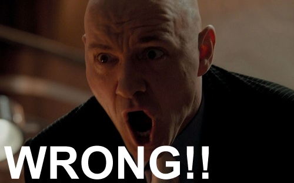
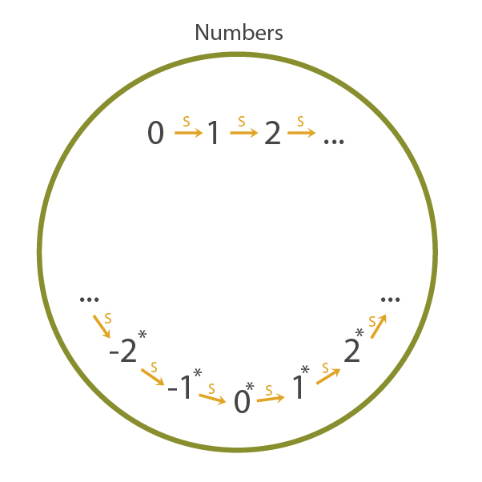
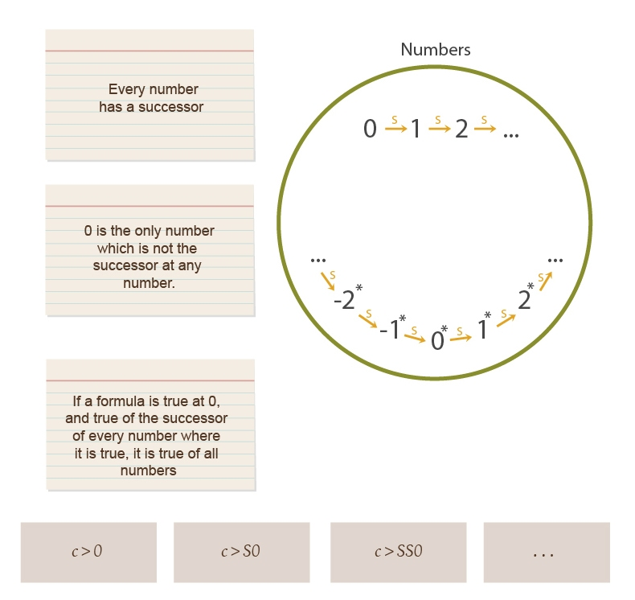
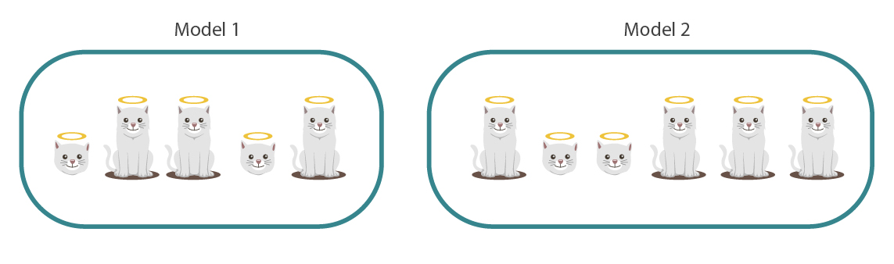
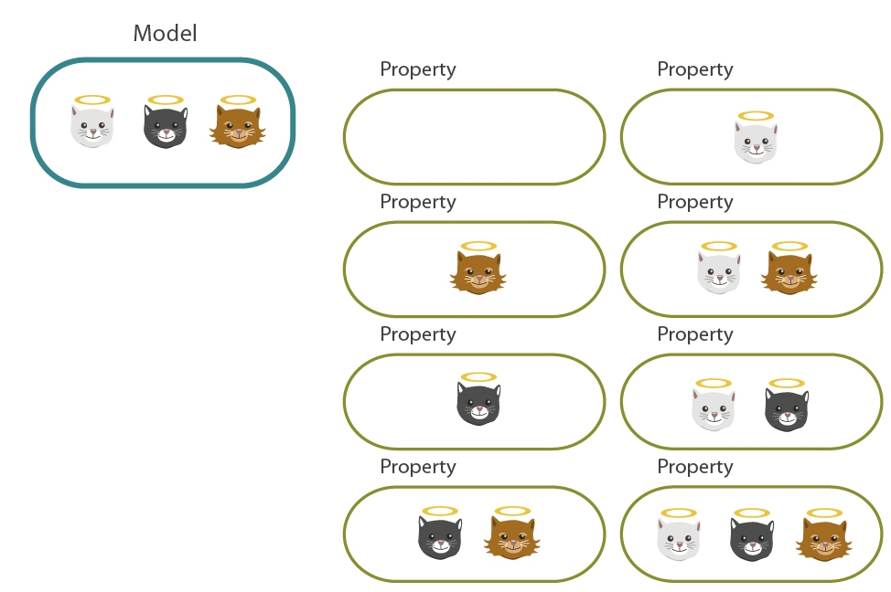
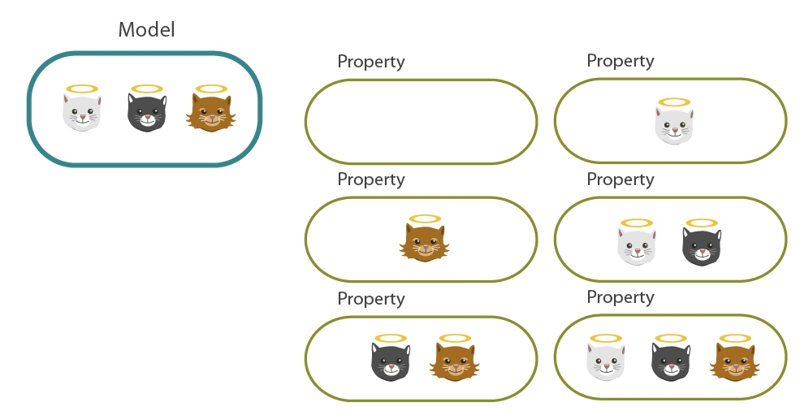
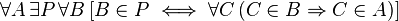
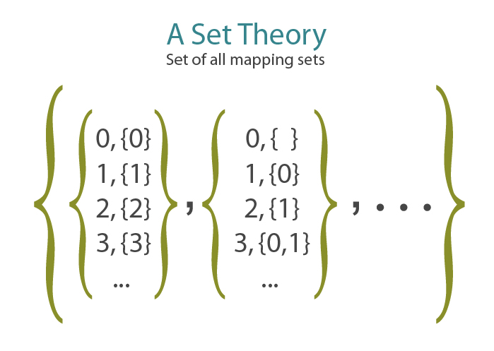

Eliezer Yudkowsky, 25 December 2012 01:16AM
Followup to: Standard and Nonstandard Numbers [http://lesswrong.com/lw/g0i/standard_and_nonstandard_numbers/]
So... last time you claimed that using first-order axioms to rule out the existence of nonstandard numbers - other chains of numbers besides the 'standard' numbers starting at 0 - was forever and truly impossible, even unto a superintelligence, no matter how clever the first-order logic used, even if you came up with an entirely different way of axiomatizing the numbers.
"Right."
How could you, in your finiteness, possibly know that?
"Have you heard of Godel's Incompleteness Theorem?"
Of course! Godel's Theorem says that for every consistent mathematical system, there are statements which are true within that system, which can't be proven within the system itself. Godel came up with a way to encode theorems and proofs as numbers, and wrote a purely numerical formula to detect whether a proof obeyed proper logical syntax. The basic trick was to use prime factorization to encode lists; for example, the ordered list <3, 7, 1, 4> could be uniquely encoded as:
23 * 37 * 51 * 74
And since prime factorizations are unique, and prime powers don't mix, you could inspect this single number, 210,039,480, and get the unique ordered list <3, 7, 1, 4> back out. From there, going to an encoding for logical formulas was easy; for example, you could use the 2 prefix for NOT and the 3 prefix for AND and get, for any formulas Φ and Ψ encoded by the numbers #Φ and #Ψ:
¬Φ = 22 * 3#Φ
Φ ∧ Ψ = 23 * 3#Φ * 5#Ψ
It was then possible, by dint of crazy amounts of work, for Godel to come up with a gigantic formula of Peano Arithmetic [](p, c) meaning, 'P encodes a valid logical proof using first-order Peano axioms of C', from which directly followed the formula []c, meaning, 'There exists a number P such that P encodes a proof of C' or just 'C is provable in Peano arithmetic.'
Godel then put in some further clever work to invent statements which referred to themselves, by having them contain sub-recipes that would reproduce the entire statement when manipulated by another formula.
And then Godel's Statement encodes the statement, 'There does not exist any number P such that P encodes a proof of (this statement) in Peano arithmetic' or in simpler terms 'I am not provable in Peano arithmetic'. If we assume first-order arithmetic is consistent and sound, then no proof of this statement within first-order arithmetic exists, which means the statement is true but can't be proven within the system. That's Godel's Theorem.
"Er... no."
No?
"No. I've heard rumors that Godel's Incompleteness Theorem is horribly misunderstood in your Everett branch. Have you heard of Godel's Completeness Theorem?"
Is that a thing?
"Yes! [http://en.wikipedia.org/wiki/G%C3%B6del%27s_completeness_theorem] Godel's Completeness Theorem says that, for any collection of first-order statements, every semantic implication of those statements is syntactically provable within first-order logic. If something is a genuine implication of a collection of first-order statements - if it actually does follow, in the models pinned down by those statements - then you can prove it, within first-order logic, using only the syntactical rules of proof, from those axioms."
I don't see how that could possibly be true at the same time as Godel's Incompleteness Theorem. The Completeness Theorem and Incompleteness Theorem seem to say diametrically opposite things. Godel's Statement is implied by the axioms of first-order arithmetic - that is, we can see it's true using our own mathematical reasoning -
"Wrong."
What? I mean, I understand we can't prove it within Peano arithmetic, but from outside the system we can see that -

All right, explain.
"Basically, you just committed the equivalent of saying, 'If all kittens are little, and some little things are innocent, then some kittens are innocent.' There are universes - logical models - where it so happens that the premises are true and the conclusion also happens to be true:"
"But there are also valid models of the premises where the conclusion is false:"
"If you, yourself, happened to live in a universe like the first one - if, in your mind, you were only thinking about a universe like that - then you might mistakenly think that you'd proven the conclusion. But your statement is not logically valid, the conclusion is not true in every universe where the premises are true. It's like saying, 'All apples are plants. All fruits are plants. Therefore all apples are fruits.' Both the premises and the conclusions happen to be true in this universe, but it's not valid logic."
Okay, so how does this invalidate my previous explanation of Godel's Theorem?
"Because of the non-standard models of first-order arithmetic. First-order arithmetic narrows things down a lot - it rules out 3-loops of nonstandard numbers, for example, and mandates that every model contain the number 17 - but it doesn't pin down a single model. There's still the possibility of infinite-in-both-directions chains coming after the 'standard' chain that starts with 0. Maybe you have just the standard numbers in mind, but that's not the only possible model of first-order arithmetic."

So?
"So in some of those other models, there are nonstandard numbers which - according to Godel's arithmetical formula for encodes-a-proof - are 'nonstandard proofs' of Godel's Statement. I mean, they're not what we would call actual proofs. An actual proof would have a standard number corresponding to it. A nonstandard proof might look like... well, it's hard to envision, but it might be something like, 'Godel's statement is true, because not-not-Godel's statement, because not-not-not-not-Godel's statement', and so on going backward forever, every step of the proof being valid, because nonstandard numbers have an infinite number of predecessors."
And there's no way to say, 'You can't have an infinite number of derivations in a proof'?
"Not in first-order logic. If you could say that, you could rule out numbers with infinite numbers of predecessors, meaning that you could rule out all infinite-in-both-directions chains, and hence rule out all nonstandard numbers. And then the only remaining model would be the standard numbers. And then Godel's Statement would be a semantic implication of those axioms; there would exist no number encoding a proof of Godel's Statement in any model which obeyed the axioms of first-order arithmetic. And then, by Godel's Completeness Theorem, we could prove Godel's Statement from those axioms using first-order syntax. Because every genuinely valid implication of any collection of first-order axioms - every first-order statement that actually does follow, in every possible model where the premises are true - can always be proven, from those axioms, in first-order logic. Thus, by the combination of Godel's Incompleteness Theorem and Godel's Completeness Theorem, we see that there's no way to uniquely pin down the natural numbers using first-order logic. QED."
Whoa. So everyone in the human-superiority crowd gloating about how they're superior to mere machines and formal systems, because they can see that Godel's Statement is true just by their sacred and mysterious mathematical intuition...
"...Is actually committing a horrendous logical fallacy of the sort that no cleanly designed AI could ever be tricked into, yes. Godel's Statement doesn't actually follow from the first-order axiomatization of Peano arithmetic! There are models where all the first-order axioms are true, and yet Godel's Statement is false! The standard misunderstanding of Godel's Statement is something like the situation as it obtains in second-order logic, where there's no equivalent of Godel's Completeness Theorem. But people in the human-superiority crowd usually don't attach that disclaimer - they usually present arithmetic using the first-order version, when they're explaining what it is that they can see that a formal system can't. It's safe to say that most of them are inadvertently illustrating the irrational overconfidence of humans jumping to conclusions, even though there's a less stupid version of the same argument which invokes second-order logic."
Nice. But still... that proof you've shown me seems like a rather circuitous way of showing that you can't ever rule out infinite chains, especially since I don't see why Godel's Completeness Theorem should be true.
"Well... an equivalent way of stating Godel's Completeness Theorem is that every syntactically consistent set of first-order axioms - that is, every set of first-order axioms such that you cannot syntactically prove a contradiction from them using first-order logic - has at least one semantic model. The proof proceeds by trying to adjoin statements saying P or ~P for every first-order formula P, at least one of which must be possible to adjoin while leaving the expanded theory syntactically consistent -"
Hold on. Is there some more constructive way of seeing why a non-standard model has to exist?
"Mm... you could invoke the Compactness Theorem [http://en.wikipedia.org/wiki/Compactness_theorem] for first-order logic. The Compactness Theorem says that if a collection of first-order statements has no model, some finite subset of those statements is also semantically unrealizable. In other words, if a collection of first-order statements - even an infinite collection - is unrealizable in the sense that no possible mathematical model fits all of those premises, then there must be some finite subset of premises which are also unrealizable. Or modus ponens to modus tollens, if all finite subsets of a collection of axioms have at least one model, then the whole infinite collection of axioms has at least one model."
Ah, and can you explain why the Compactness Theorem should be true?
"No. [http://www.proofwiki.org/wiki/Compactness_Theorem]"
I see.
"But at least it's simpler than the Completeness Theorem, and from the Compactness Theorem, the inability of first-order arithmetic to pin down a standard model of numbers follows immediately. Suppose we take first-order arithmetic, and adjoin an axiom which says, 'There exists a number greater than 0.' Since there does in fact exist a number, 1, which is greater than 0, first-order arithmetic plus this new axiom should be semantically okay - it should have a model if any model of first-order arithmetic ever existed in the first place. Now let's adjoin a new constant symbol c to the language, i.e., c is a constant symbol referring to a single object across all statements where it appears, the way 0 is a constant symbol and an axiom then identifies 0 as the object which is not the successor of any object. Then we start adjoining axioms saying 'c is greater than X', where X is some concretely specified number like 0, 1, 17, 2256, and so on. In fact, suppose we adjoin an infinite series of such statements, one for every number:"

Wait, so this new theory is saying that there exists a number c which is larger than every number?
"No, the infinite schema says that there exists a number c which is larger than any standard number."
I see, so this new theory forces a nonstandard model of arithmetic.
"Right. It rules out only the standard model. And the Compactness Theorem says this new theory is still semantically realizable - it has some model, just not the standard one."
Why?
"Because any finite subcollection of the new theory's axioms, can only use a finite number of the extra axioms. Suppose the largest extra axiom you used was 'c is larger than 2256'. In the standard model, there certainly exists a number 2256+1 with which c could be consistently identified. So the standard numbers must be a model of that collection of axioms, and thus that finite subset of axioms must be semantically realizable. Thus by the Compactness Theorem, the full, infinite axiom system must also be semantically realizable; it must have at least one model. Now, adding axioms never increases the number of compatible models of an axiom system - each additional axiom can only filter out models, not add models which are incompatible with the other axioms. So this new model of the larger axiom system - containing a number which is greater than 0, greater than 1, and greater than every other 'standard' number - must also be a model of first-order Peano arithmetic. That's a relatively simpler proof that first-order arithmetic - in fact, any first-order axiomatization of arithmetic - has nonstandard models."
Huh... I can't quite say that seems obvious, because the Compactness Theorem doesn't feel obvious; but at least it seems more specific than trying to prove it using Godel's Theorem.
"A similar construction to the one we used above - adding an infinite series of axioms saying that a thingy is even larger - shows that if a first-order theory has models of unboundedly large finite size, then it has at least one infinite model. To put it even more alarmingly, there's no way to characterize the property of finiteness in first-order logic! You can have a first-order theory which characterizes models of cardinality 3 - just say that there exist x, y, and z which are not equal to each other, but with all objects being equal to x or y or z. But there's no first-order theory which characterizes the property of finiteness in the sense that all finite models fit the theory, and no infinite model fits the theory. A first-order theory either limits the size of models to some particular upper bound, or it has infinitely large models."
So you can't even say, 'x is finite', without using second-order logic? Just forming the concept of infinity and distinguishing it from finiteness requires second-order logic?
"Correct, for pretty much exactly the same reason you can't say 'x is only a finite number of successors away from 0'. You can say, 'x is less than a googolplex' in first-order logic, but not, in full generality, 'x is finite'. In fact there's an even worse theorem, the Lowenheim-Skolem theorem [http://en.wikipedia.org/wiki/L%C3%B6wenheim%E2%80%93Skolem_theorem], which roughly says that if a first-order theory has any infinite model, it has models of all possible infinite cardinalities. There are uncountable models of first-order Peano arithmetic. There are countable models of first-order real arithmetic - countable models of any attempt to axiomatize the real numbers in first-order logic. There are countable models of Zermelo-Frankel set theory."
How could you possibly have a countable model of the real numbers? Didn't Cantor prove that the real numbers were uncountable? Wait, let me guess, Cantor implicitly used second-order logic somehow.
"It follows from the Lowenheim-Skolem theorem that he must've. Let's take Cantor's proof as showing that you can't map every set of integers onto a distinct integer - that is, the powerset of integers is larger than the set of integers. The Diagonal Argument is that if you show me a mapping like that, I can take the set which contains 0 if and only if 0 is not in the set mapped to the integer 0, contains 1 if and only if 1 is not in the set mapped to the integer 1, and so on. That gives you a set of integers that no integer maps to."
You know, when I was very young indeed, I thought I'd found a counterexample to Cantor's argument. Just take the base-2 integers - 1='1', 2='10', 3='11', 4='100', 5='101', and so on, and let each integer correspond to a set in the obvious way, keeping in mind that I was also young enough to think the integers started at 1:
| 1 | 10 | 11 | 100 | 101 | 110 | 111 | 1000 | 1001 |
| {1} | {2} | {2, 1} | {3} | {3, 1} | {3, 2} | {3, 2, 1} | {4} | {4, 1} |
Clearly, every set of integers would map onto a unique integer this way.
"Heh."
Yeah, I thought I was going to be famous.
"How'd you realize you were wrong?"
After an embarrassingly long interval, it occurred to me to actually try applying Cantor's Diagonal Argument to my own construction. Since 1 is in {1} and 2 is in {2}, they wouldn't be in the resulting set, but 3, 4, 5 and everything else would be. And of course my construct didn't have the set {3, 4, 5, ...} anywhere in it. I'd mapped all the finite sets of integers onto integers, but none of the infinite sets.
"Indeed."
I was then tempted to go on arguing that Cantor's Diagonal Argument was wrong anyhow because it was wrong to have infinite sets of integers. Thankfully, despite my young age, I was self-aware enough to realize I was being tempted to become a mathematical crank - I had also read a book on mathematical cranks [http://www.amazon.com/Mathematical-Cranks-Spectrum-Underwood-Dudley/dp/0883855070] by this point - and so I just quietly gave up [http://lesswrong.com/lw/gx/just_lose_hope_already/], which was a valuable life lesson.
"Indeed."
But how exactly does Cantor's Diagonal Argument depend on second-order logic? Is it something to do with nonstandard integers?
"Not exactly. What happens is that there's no way to make a first-order theory contain all subsets of an infinite set; there's no way to talk about the powerset of the integers. Let's illustrate using a finite metaphor. Suppose you have the axiom "All kittens are innocent." One model of that axiom might contain five kittens, another model might contain six kittens."

"In a second-order logic, you can talk about all possible collections of kittens - in fact, it's built into the syntax of the language when you quantify over all properties."

"In a first-order set theory, there are some subsets of kittens whose existence is provable, but others might be missing."

"Though that image is only metaphorical, since you can prove the existence of all the finite subsets. Just imagine that's an infinite number of kittens we're talking about up there."
And there's no way to say that all possible subsets exist?
"Not in first-order logic, just like there's no way to say that you want as few natural numbers as possible. Let's look at it from the standpoint of first-order set theory. The Axiom of Powerset [http://en.wikipedia.org/wiki/Axiom_of_power_set] says:"

Okay, so that says, for every set A, there exists a set P which is the power set of all subsets of A, so that for every set B, B is inside the powerset P if and only if every element of B is an element of A. Any set which contains only elements from A, will be inside the powerset of A. Right?
"Almost. There's just one thing wrong in that explanation - the word 'all' when you say 'all subsets'. The Powerset Axiom says that for any collection of elements from A, if a set B happens to exist which embodies that collection, that set B is inside the powerset P of A. There's no way of saying, within a first-order logical theory, that a set exists for every possible collection of A's elements. There may be some sub-collections of A whose existence you can prove. But other sub-collections of A will happen to exist as sets inside some models, but not exist in others."
So in the same way that first-order Peano arithmetic suffers from mysterious extra numbers, first-order set theory suffers from mysterious missing subsets.
"Precisely. A first-order set theory might happen to be missing the particular infinite set corresponding to, oh, say, {3, 8, 17, 22, 28, ...} where the '...' is an infinite list of random numbers with no compact way of specifying them. If there's a compact way of specifying a set - if there's a finite formula that describes it - you can often prove it exists. But most infinite sets won't have any finite specification. It's precisely the claim to generalize over all possible collections that characterizes second-order logic. So it's trivial to say in a second-order set theory that all subsets exist. You would just say that for any set A, for any possible predicate P, there exists a set B which contains x iff x in A and Px."
I guess that torpedoes my clever idea about using first-order set theory to uniquely characterize the standard numbers by first asserting that there exists a set containing at least the standard numbers, and then talking about the smallest subset which obeys the Peano axioms.
"Right. When you talk about the numbers using first-order set theory, if there are extra numbers inside your set of numbers, the subset containing just the standard numbers must be missing from the powerset of that set. Otherwise you could find the smallest subset inside the powerset such that it contained 0 and contained the successor of every number it contained."
Hm. So then what exactly goes wrong with Cantor's Diagonal Argument?
"Cantor's Diagonal Argument uses the idea of a mapping between integers and sets of integers. In set theory, each mapping would itself be a set - in fact there would be a set of all mapping sets:"

"There's no way to first-order assert the existence of every possible mapping that we can imagine from outside. So a first-order version of the Diagonal Argument would show that in any particular model, for any mapping that existed in the model from integers to sets of integers, the model would also contain a diagonalized set of integers that wasn't in that mapping. This doesn't mean that we couldn't count all the sets of integers which existed in the model. The model could have so many 'missing' sets of integers that the remaining sets were denumerable. But then some mappings from integers to sets would also be missing, and in particular, the 'complete' mapping we can imagine from outside would be missing. And for every mapping that was in the model, the Diagonal Argument would construct a set of integers that wasn't in the mapping. On the outside, we would see a possible mapping from integers to sets - but that mapping wouldn't exist inside the model as a set. It takes a logic-of-collections to say that all possible integer-collections exist as sets, or that no possible mapping exists from the integers onto those sets."
So if first-order logic can't even talk about finiteness vs. infiniteness - let alone prove that there are really more sets of integers than integers - then why is anyone interested in first-order logic in the first place? Isn't that like trying to eat dinner using only a fork, when there are lots of interesting foods which provably can't be eaten with a fork, and you have a spoon?
"Ah, well... some people believe there is no spoon. But let's take that up next time."
Part of the sequence Highly Advanced Epistemology 101 for Beginners [http://wiki.lesswrong.com/wiki/Highly_Advanced_Epistemology_101_for_Beginners]
Next post: "Second-Order Logic: The Controversy [http://lesswrong.com/lw/g7n/secondorder_logic_the_controversy/]"
Previous post: "Standard and Nonstandard Numbers [http://lesswrong.com/lw/g0i/standard_and_nonstandard_numbers/]"
| Sequence 17: Highly Advanced Epistemology 101 for Beginners: | |
|---|---|
Previous: Standard and Nonstandard Numbers | |
Referenced by: Standard and Nonstandard Numbers • Second-Order Logic: The Controversy
Original with comments: Godel's Completeness and Incompleteness Theorems